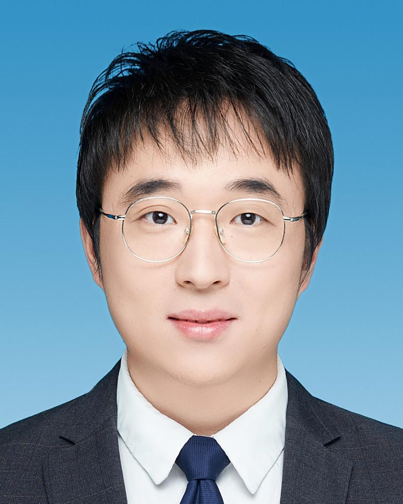

Invited Lectures
Dr. Man Ho Allen Au
Professor at The Hong Kong Polytechnic University. Expert in information security, applied cryptography, and blockchain. He has published over 190 peer-reviewed papers and was named a Clarivate Highly Cited Researcher (2020–2022). Listed among Stanford’s top 2% scientists, he is a key contributor to Hyperledger Fabric. He has secured over HK$30M in research grants. Dr. Au serves as an ISO/IEC cryptography delegate and is an active member of the Hong Kong Blockchain Association.
Prof. Chen Xiaofeng

Huashan Scholar Professor at Xidian University and Executive Dean of the School of Cyber Engineering. His research spans public-key cryptography, cloud security, and privacy-preserving computing. He is a Fellow of IEEE and AAIA and has published over 300 academic papers with 17,000+ citations. He was selected as a National High-Level Talent in 2017 and is a Clarivate Highly Cited Researcher.
Dr. Deng Yi
Associate Researcher at the Institute of Information Engineering, Chinese Academy of Sciences. His research interests include zero-knowledge proofs, cryptographic protocols, and blockchain privacy. He won the ZPrize international competition and completed his PhD and postdoctoral studies at UCL and NTU Singapore. He received multiple youth talent honors from the Chinese Association for Cryptologic Research.
Prof. Li Jin
Vice President of Guangzhou University and Executive Dean of the Artificial Intelligence Research Institute. He is a professor and doctoral advisor, selected for the National High-Level Talent Program. His work focuses on AI security and federated learning. He has led several National Key R&D projects and National Natural Science Foundation joint key projects. He is also a global Highly Cited Researcher.
Prof. Liu Zheli
Deputy Dean of the School of Computer Science at Nankai University and Director of the Tianjin Key Lab of Data and Intelligence Security. His research includes data privacy protection, secure multi-party computation, and privacy in AI. He has published extensively in top journals and conferences, and his work contributes to both theoretical advances and engineering applications.
Prof. Shen Jian
Professor and Vice Dean of the Graduate School at Nanjing University of Information Science and Technology. His work covers public-key cryptography, blockchain security, and privacy protection. He has published more than 100 papers and is an awardee of the NSFC Excellent Youth Fund. He is also recognized as a Clarivate Highly Cited Researcher.
Prof. Tian Youliang
Dean of the School of Big Data and Information Engineering at Guizhou University. A recipient of National Young Talent honors and expert with special government allowance. He has led numerous national-level laboratories and major scientific projects in data privacy, cryptographic computation, and secure data sharing.
Prof. Zhu Liehuang

Professor and Party Secretary of the School of Cyberspace Security at Beijing Institute of Technology. His research includes cryptographic protocols, IoT security, and AI security. He has published over 200 papers, holds more than 20 patents, and has received the Beijing Science and Technology Award. He serves as a PI for national key projects in cyberspace security.
Prof. Zhu Tianqing
Professor and Associate Dean (Research) at the School of Data Science, City University of Macau. He received his Ph.D. in Computer Science from Deakin University, Australia, in 2014. His research interests include artificial intelligence security, privacy protection, and cybersecurity. Prof. Zhu has published over 180 SCI-indexed papers, with more than 40 papers in IEEE Transactions journals as the first or corresponding author. He serves as an associate editor for four SCI journals and has been a program chair or committee member for several AI conferences. He has supervised over 30 Ph.D. students and was listed among Stanford's top 2% scientists.
Prof. Zou Deqing

Executive Dean of the School of Cyber Science and Engineering at Huazhong University of Science and Technology. He has led multiple National Key R&D projects in software security, vulnerability analysis, and operating system protection. A recipient of the National Teaching Award in Network Security and principal expert in the National Cyberspace Security Talent and Innovation Base.